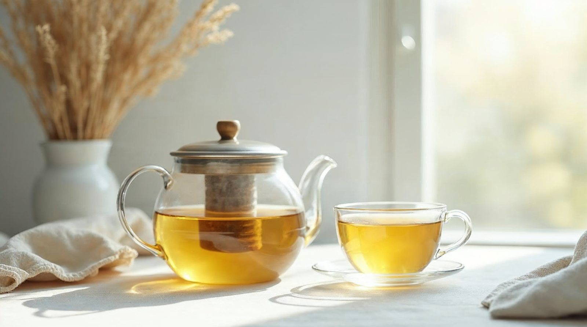
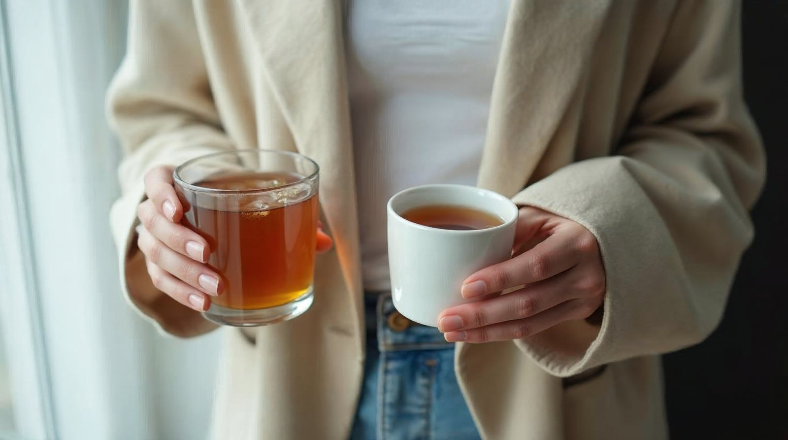
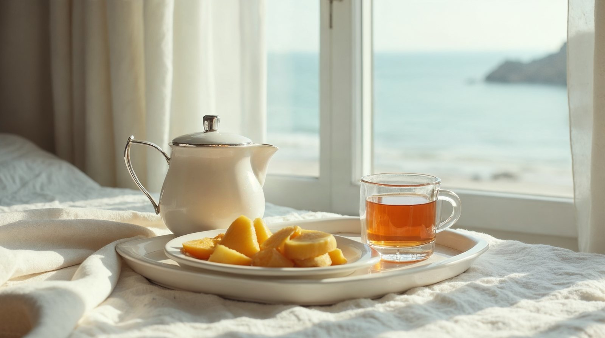
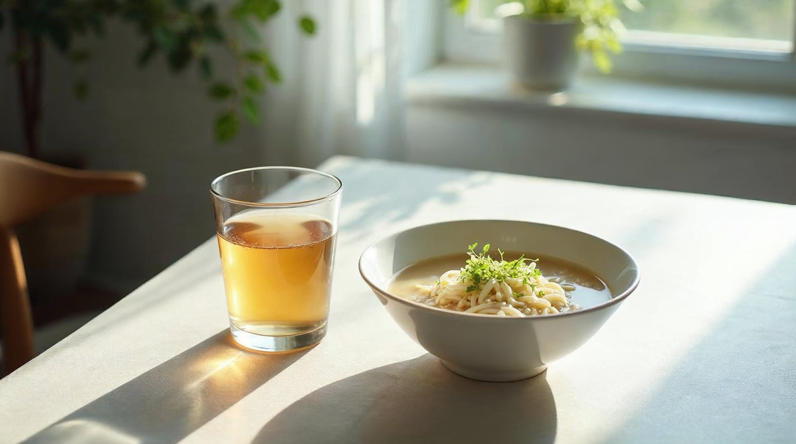

이종호 한의사 감수좋은꿈참사랑한의원 대표원장 (한의사 면허번호 19769)발행 2026-11-24 · 수정 2026-11-26
이 글의 차례
- 왜 이런 불편이 생길 수 있나요
- 비슷해 보여도 구분해 볼 점
- 왜 술자리가 이어지면 잠이 얕아질까요?
- 자주 하는 오해
- 예를 들면 이런 경우입니다
- 먼저 이렇게 여쭙니다
- 스스로 점검해 보세요
- 일상에서 먼저 해 볼 수 있는 것
- 회식 전날과 당일, 다음 날은 어떻게 보내면 좋을까요?
- 술을 거절하기 어려울 때는 어떻게 할까요?
- 얼마나 지켜보고, 언제 바로 확인할까요
- 술자리 뒤 운동은 언제 다시 해도 될까요?
- 술자리 다음 날 컨디션은 어떻게 적을까요?
- 술자리가 없는 날은 어떻게 보내면 좋을까요?
- 가족이 함께 도울 수 있는 것
- 한의원에서 함께 살필 수 있는 경우
- 술자리가 잦을 때 한약 상담에서는 무엇을 살피나요?
- 한약을 드시는 이유에 따라 무엇이 달라질까요?
- 회식 다음 날 출근길에 해 볼 것
- 연말이 지나고 몸을 되돌리는 2주
- 숙취해소제와 위장약은 어떻게 알려 주면 좋을까요?
- 이렇게 기록해 오시면 상담이 쉬워집니다
- 이런 증상은 먼저 확인이 필요합니다
- 함께 읽으면 좋은 글
12월이 되면 송년회와 회식이 줄줄이 잡힙니다. 한약을 드시는 중인 분들은 "술자리를 다 빠질 수도 없고 어떡하죠?" 하고 묻곤 합니다. 노량진과 상도동 일대 직장인들께 특히 자주 듣는 질문인데, 미리 이야기해 주시면 일정에 맞춰 방법을 함께 찾을 수 있습니다.
왜 이런 불편이 생길 수 있나요
- 술은 속을 자극하고 잠을 얕게 해, 한약을 드시는 동안 살피려던 소화와 잠의 변화를 읽기 어렵게 만들 수 있습니다.
- 늦은 시간 기름진 안주와 과식이 겹치면 다음 날 속이 더부룩하고 몸이 무거워지기 쉽습니다.
- 술자리가 이어지면 식사와 잠 시각이 흐트러져 컨디션이 오르내립니다.
- 술과 함께 드시는 다른 약이 있다면 몸에 부담이 더해질 수 있습니다.
비슷해 보여도 구분해 볼 점
- 술 마신 다음 날만 속이 더부룩하고 하루 이틀 쉬면 가라앉는다면 생활 리듬부터 정리해 봅니다.
- 술을 마시지 않은 날에도 속쓰림이나 신물이 자주 올라온다면 위장 상태를 따로 살펴야 합니다.
- 술을 조금만 마셔도 얼굴이 심하게 붉어지고 두근거림이 오는 분은 그 반응을 진료 때 먼저 말씀해 주세요.
- 피로가 술자리와 상관없이 몇 주째 이어진다면 술 외의 원인도 함께 살펴봅니다.
왜 술자리가 이어지면 잠이 얕아질까요?
술을 마시면 처음에는 쉽게 잠드는 것 같아도, 새벽에 자주 깨고 깊이 자지 못하는 경우가 많습니다. 늦게 귀가해 잠드는 시각까지 밀리면 다음 날 피로가 겹치기 쉽습니다.
한약을 드시는 동안에는 잠의 변화도 함께 살피는데, 술자리가 많은 주에는 그 변화를 읽기 어려워집니다. 그래서 술자리 날짜와 잠든 시각을 함께 적어 주시길 부탁드립니다.

자주 하는 오해
- 한약을 먹는 동안 술자리가 있으면 한약을 아예 끊어야 한다고 여기기 쉽지만, 일정을 알려 주시면 복용 계획을 함께 조정할 수 있습니다.
- 술 마신 날 빠뜨린 한약은 다음 날 두 번 먹으면 된다고 생각하기 쉽지만, 임의로 몰아 드시지 말고 처방받은 곳에 여쭤 보세요.
- 맥주나 와인처럼 순한 술은 괜찮다고 여기는 분이 많지만, 종류보다 마시는 양과 횟수, 그날의 몸 상태를 함께 보는 편이 좋습니다.
- 숙취해소제를 먹으면 다음 날 괜찮다고 생각하기 쉽지만, 한약과 함께 드신 것이 있다면 진료 때 꼭 말씀해 주세요.
예를 들면 이런 경우입니다
- 예를 들어 한 주에 송년회가 세 번 잡힌 직장인이라면, 달력에 회식 날짜를 표시해 진료 때 보여 주시면 그 주의 복용 시간과 방법을 날짜별로 함께 정할 수 있습니다.
- 예를 들어 거래처 모임이라 술을 거절하기 어려운 분이라면, 되도록 무알코올 음료나 물로 대신하는 방법과 그 주의 복용 방법을 모임 전에 미리 함께 정해 둡니다.
- 예를 들어 회식 다음 날 아침 한약을 먹어야 할지 헷갈리는 분이라면, 몰아서 드시거나 혼자 판단해 건너뛰기보다 처방받은 곳에 전화로 여쭤 그날의 방법을 확인하세요.

먼저 이렇게 여쭙니다
- 이번 달 회식이나 모임이 몇 번쯤 잡혀 있나요?
- 평소 한 번에 술을 얼마나 드시나요?
- 한약은 하루 중 언제 드시고 계신가요?
- 술 마신 다음 날 속이나 잠이 어떻게 달라지나요?
- 술자리가 있는 날은 보통 몇 시쯤 귀가하시나요?
- 숙취해소제나 위장약을 자주 드시나요?
스스로 점검해 보세요
- 이번 달 술자리가 네 번 이상 잡혀 있다
- 술 마신 다음 날 한약을 거른 적이 있다
- 술자리가 밤 11시를 넘겨 끝나는 날이 많다
- 술 마신 다음 날 속쓰림이나 묽은 변이 생긴다
- 술 마신 날은 자다가 자주 깬다
- 숙취해소제나 위장약을 한약과 함께 드신 적이 있다
해당하는 항목이 여럿이라면 진료 때 말씀해 주시면 상담이 쉬워집니다.

일상에서 먼저 해 볼 수 있는 것
- 회식 일정이 잡히면 한의원에 미리 알려 복용 방법 상의하기
- 술자리에서는 물이나 무알코올 음료를 번갈아 마시기
- 술 마신 날 한약을 어떻게 할지는 처방받은 곳의 안내 따르기
- 늦은 시간 기름진 안주로 과식하지 않고, 다음 날 아침은 따뜻하고 부드럽게 먹기
술자리가 있는 날에는 출발 전에 밥이나 두부처럼 속을 채울 음식을 조금 먹어 두면 빈속에 술이 들어가는 일을 줄일 수 있습니다. 귀가한 뒤에는 바로 눕기보다 물을 한 컵 마시고 잠자리에 드세요.
회식 전날과 당일, 다음 날은 어떻게 보내면 좋을까요?
회식 전날에는 평소보다 일찍 잠자리에 들어 몸을 덜 지친 상태로 만들어 두세요. 잠이 모자란 상태에서 마시는 술은 다음 날 피로를 더 키우기 쉽습니다.
당일에는 점심을 거르지 말고 제때 드세요. 술자리에서는 기름진 안주보다 두부, 생선, 채소처럼 담백한 것 위주로 고르고, 잔을 비우는 속도를 늦춰 보세요.
다음 날 아침은 따뜻한 국이나 죽처럼 부드러운 음식으로 시작하고, 커피는 속이 편해진 뒤에 드시는 편이 좋습니다.
술을 거절하기 어려울 때는 어떻게 할까요?
"요즘 약을 먹고 있어서 오늘은 음료로 할게요"처럼 미리 정해 둔 한마디가 있으면 자리에서 덜 곤란합니다. 처음부터 잔에 물이나 무알코올 음료를 채워 두는 것도 방법입니다.
건배는 음료 잔으로 함께하거나, 2차는 정중히 사양하고 일찍 귀가하는 것도 몸을 지키는 방법입니다.
얼마나 지켜보고, 언제 바로 확인할까요
술자리 뒤 속이 더부룩하거나 잠이 얕은 정도라면 하루 이틀 평소 식사와 잠으로 돌아가며 지켜보되, 술자리가 이어진 주가 지나도 사흘 넘게 속이 불편하다면 다음 진료를 기다리지 말고 한의원에 알려 주세요.
한약을 드신 뒤 불편한 반응이 생기면 복용을 멈추고 연락해 주세요.
술자리 뒤 운동은 언제 다시 해도 될까요?
술 마신 다음 날은 몸에 물이 부족하고 잠도 모자라 격한 운동을 하면 쉽게 지칩니다. 그날은 가볍게 걷는 정도로 하고, 물을 충분히 드세요.
속과 잠이 평소로 돌아온 뒤에 하던 운동을 천천히 다시 시작하시면 됩니다.
술자리 다음 날 컨디션은 어떻게 적을까요?
술 마신 다음 날 아침에 "속 5점, 잠 4점, 대변 묽음"처럼 짧게 적어 두세요. 마신 술의 양과 끝난 시각을 함께 남기면, 어느 정도 마셨을 때 다음 날이 힘든지 스스로도 알아차리기 쉽습니다.
이 기록은 다음 진료에서 복용 계획을 다시 맞출 때 참고합니다.
술자리가 없는 날은 어떻게 보내면 좋을까요?
회식이 몰린 달에는 술자리가 없는 날을 회복하는 날로 정해 두세요. 저녁을 일찍 가볍게 먹고, 따뜻한 물로 씻은 뒤 평소보다 조금 일찍 잠자리에 드는 것이 다음 술자리까지 몸을 덜 지치게 하는 데 도움이 될 수 있습니다.
이런 날에는 한약도 정해진 시간에 빠뜨리지 않고 드시기 쉽습니다. 술자리가 없는 날의 잠과 속 상태도 함께 적어 두시면 비교하기 좋습니다.
가족이 함께 도울 수 있는 것
- 회식 다음 날 아침에 따뜻한 국이나 죽을 준비해 두기
- 귀가 시각이 너무 늦어지지 않도록 미리 이야기 나누기
- 한약 드실 시간을 함께 기억해 주기

한의원에서 함께 살필 수 있는 경우
- 회식이 잦아 속이 불편하고 잠이 얕아진 경우, 식사와 잠의 리듬을 함께 살핍니다.
- 한약 복용 중 술자리를 피하기 어려운 경우, 일정에 맞춰 복용 시간과 방법을 함께 정합니다.
- 연말 모임 뒤 몸이 무겁고 피곤한 경우, 회복 리듬을 함께 살핍니다.
좋은꿈참사랑한의원에서는 진맥으로 지금 몸 상태를 살피면서 이번 달 일정과 술자리 횟수를 충분히 듣고, 처방과 복용 계획을 조정할지 함께 정합니다. 귀가 전에는 술자리가 있는 날의 복용 방법을 따로 알려 드립니다.
처음 오시면 데스크에서 기본 정보를 적고, 원장이 맥부터 짚으면서 주된 불편과 함께 평소 술의 양과 횟수, 잠, 소화, 배변, 복용 중인 약과 영양제를 여쭙습니다. 필요하다고 판단될 때 설진·복진을 더하며, 처방을 정할 때는 간·신장 상태도 함께 고려합니다.
연말처럼 일정이 몰리는 시기에는 회식 날짜를 알려 주시면 복용 계획에 미리 반영해 드립니다.
술자리가 잦을 때 한약 상담에서는 무엇을 살피나요?
술을 자주 드시는 분은 같은 피로라도 잠이 얕아서인지, 속이 지쳐서인지, 늦은 귀가로 생활 리듬이 흔들려서인지 나눠 볼 필요가 있습니다. 저는 술 마신 다음 날의 대변과 속쓰림, 아침 입맛을 꼭 여쭙습니다.
최근 건강검진 결과지가 있으면 간 수치 부분을 같이 봅니다. 결과지가 없고 피로가 오래 이어진다면, 필요하다고 판단될 때 내과 검사를 먼저 권하기도 합니다.
술자리가 몰린 기간에는 처방을 바꾸기보다 복용 시간과 방법을 먼저 조정하기도 합니다.
한약을 드시는 이유에 따라 무엇이 달라질까요?
소화를 살피려고 드시는 분, 잠과 피로 때문에 드시는 분, 체중 관리를 위해 드시는 분은 술자리가 몸에 주는 부담도 조금씩 다르게 봅니다. 예를 들어 체중 관리 중이라면 술과 함께 늦은 안주가 더해지는지를 특히 살핍니다.
그래서 저는 회식 일정을 들으면 한약을 드시는 목적을 다시 짚어 보고, 그 목적에 맞게 술자리 전후로 지킬 점을 한두 가지만 정해 드립니다. 너무 많은 규칙보다 지킬 수 있는 약속이 오래 갑니다.
회식 다음 날 출근길에 해 볼 것
- 집을 나서기 전 물 한 컵 마시기
- 아침을 거르지 말고 따뜻한 국물이나 바나나처럼 부담 없는 것 챙기기
- 한두 정거장 먼저 내려 10분쯤 걸으며 몸 깨우기
- 점심은 맵고 짠 음식보다 담백한 메뉴 고르기
연말이 지나고 몸을 되돌리는 2주
- 첫 주: 잠드는 시각과 일어나는 시각을 평소대로 되돌리고, 아침 식사를 거르지 않기
- 첫 주: 맵고 기름진 음식은 줄이고, 국과 밥, 채소 위주로 담백하게 먹기
- 둘째 주: 하루 20~30분 걷기를 다시 시작하고, 물을 조금씩 자주 마시기
- 둘째 주: 속과 잠, 대변이 어떻게 달라졌는지 적어 다음 진료 때 보여 주기
연말이 지나도 속 불편과 피로가 이어진다면, 그 기록을 바탕으로 처방과 복용 계획을 다시 함께 살펴봅니다.
숙취해소제와 위장약은 어떻게 알려 주면 좋을까요?
술자리 앞뒤로 숙취해소제나 위장약, 진통제를 드시는 분이 많습니다. 드신 제품의 이름과 드신 날짜를 메모해 두시거나 통을 사진으로 찍어 오세요.
술과 진통제를 함께 드시면 위와 간에 부담이 될 수 있어, 그런 날이 잦다면 약사나 의사와 먼저 상의해 주세요. 병원에서 처방받은 약은 임의로 끊지 마시고 그대로 알려 주세요.
이렇게 기록해 오시면 상담이 쉬워집니다
- 이번 달 회식 날짜와 예상되는 술의 양
- 술 마신 다음 날의 속 상태, 대변, 잠
- 한약을 실제로 드신 시각과 빠뜨린 날
- 숙취해소제나 위장약 등 함께 드신 약
회사 일정표나 휴대전화 달력에 이미 회식 날짜가 있다면 그 화면을 그대로 보여 주셔도 됩니다. 술자리마다 마신 술의 종류와 대략의 잔 수, 끝난 시각을 한 줄씩 덧붙여 두면 다음 진료에서 몸의 변화를 함께 읽기 훨씬 쉬워집니다.
연말 모임을 다 피해 갈 수는 없으니, 지킬 수 있는 것부터 하나씩 정해 보시면 됩니다. 다음에 오시면 이번 달 달력부터 함께 보며 술자리 다음 날 속과 잠이 어땠는지 여쭙겠습니다.
이런 증상은 먼저 확인이 필요합니다
- 술을 마신 뒤 피를 토하거나 검은 변을 본 경우
- 배가 심하게 아프거나 열이 나는 경우, 눈이나 피부가 노랗게 변한 경우
이런 신호가 있으면 한의원보다 가까운 병원이나 응급실을 먼저 찾으세요.
함께 읽으면 좋은 글
- 연말 회식을 하고 나면 며칠씩 속이 불편한 이유는 무엇인가요?
- 한약을 먹는 동안 양약과 음식은 어떻게 알려 주면 되나요?
- 술 마신 다음 날 숙취와 속 쓰림은 왜 생기고 어떻게 살피나요?

여쭙는 것
- 이번 달 회식이나 모임이 몇 번쯤 잡혀 있나요?
- 평소 한 번에 술을 얼마나 드시나요?
- 한약은 하루 중 언제 드시고 계신가요?
생활에서 해 볼 것
- 회식 일정이 잡히면 한의원에 미리 알려 복용 방법 상의하기
- 술자리에서는 물이나 무알코올 음료를 번갈아 마시기
- 술 마신 날 한약을 어떻게 할지는 처방받은 곳의 안내 따르기
한의원에서 함께 살필 것
- 회식이 잦아 속이 불편하고 잠이 얕아진 경우, 식사와 잠의 리듬을 함께 살핍니다.
- 한약 복용 중 술자리를 피하기 어려운 경우, 일정에 맞춰 복용 시간과 방법을 함께…
- 연말 모임 뒤 몸이 무겁고 피곤한 경우, 회복 리듬을 함께 살핍니다.
먼저 확인이 필요한 신호
- 술을 마신 뒤 피를 토하거나 검은 변을 본 경우
- 배가 심하게 아프거나 열이 나는 경우, 눈이나 피부가 노랗게 변한 경우
한눈에 보는 표
| 구분 | 핵심 |
|---|---|
| 여쭙는 것 | 이번 달 회식이나 모임이 몇 번쯤 잡혀 있나요? 평소 한 번에 술을 얼마나 드시나요? |
| 생활에서 해 볼 것 | 회식 일정이 잡히면 한의원에 미리 알려 복용 방법 상의하기 술자리에서는 물이나 무알코올 음료를 번갈아 마시기 |
| 한의원에서 함께 살필 것 | 회식이 잦아 속이 불편하고 잠이 얕아진 경우, 식사와 잠의 리듬을 함께 살핍니다. 한약 복용 중 술자리를 피하기 어려운 경우, 일정에 맞춰 복용 시간과 방법을 함께 정합니다. |
| 먼저 확인이 필요한 신호 | 술을 마신 뒤 피를 토하거나 검은 변을 본 경우 배가 심하게 아프거나 열이 나는 경우, 눈이나 피부가 노랗게 변한 경우 |
자주 묻는 질문
한 잔 정도는 괜찮지 않나요?
한약을 드시는 동안에는 술을 줄이거나 피하도록 권하는 경우가 많습니다. 처방과 몸 상태에 따라 다르니, 회식 전에 미리 여쭤 주시면 함께 정합니다.
회식이 많은 달에는 한약을 쉬어야 하나요?
꼭 그렇지는 않습니다. 일정을 알려 주시면 복용 계획을 함께 조정합니다.
술을 마신 날 한약을 빼먹었으면 다음 날 두 번 먹어도 되나요?
임의로 몰아 드시지 말고, 빠뜨린 날은 처방받은 곳에 연락해 안내를 받아 주세요.
송년회가 끝난 뒤 언제 다시 진료를 받으면 되나요?
정해진 날짜보다 술자리가 몰린 주가 지난 뒤 속과 잠이 어떤지 보며 정하시면 됩니다. 불편이 이어지면 일정과 상관없이 연락 주세요.
좋은꿈참사랑한의원은 재진 때 지난번 이야기부터 이어서 여쭙니다. 진료시간과 예약은 오시는 길에서 확인하세요.
어디서 상담받을 수 있나요?
좋은꿈참사랑한의원은 서울 동작구 만양로2길 2 신성빌딩 3층·5층(서울 동작구 상도동, 7호선 상도역 3번 출구 근처)에 있습니다. 한의사 3명(이종호 대표원장, 조영기 수석진료원장, 정원영 진료원장)이 진료합니다. 진료시간은 평일 09:30~20:00(점심 13:00~14:00), 토·일·공휴일 09:30~15:00이며, 방문 전 전화로 확인을 권합니다. 예약은 네이버 예약, 카카오톡 상담, 전화 02-815-7510로 받습니다.
이 글은 일반적인 건강 정보이며 개인의 진단이나 치료를 대신하지 않습니다. 증상이 있거나 복용 중인 약이 있다면 진료를 통해 확인하세요. 치료 효과는 개인마다 다를 수 있습니다.
작성 기준: 일반적으로 알려져 있는 건강 정보를 참고해 정리했습니다(대표원장 감수). 증상 기록은 1~2주 동안 하루 1회, 비슷한 시간에 적어 오시면 지난 상태와 비교하기 쉽습니다.